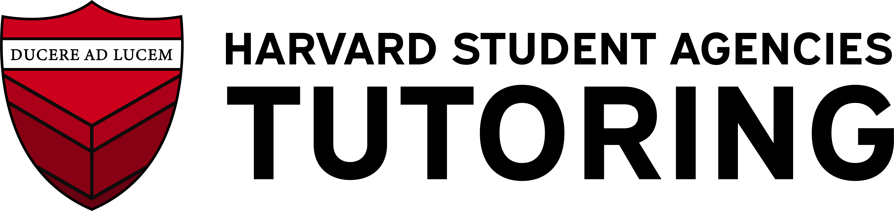

College Counseling
SAT/ACT
General Academics
Tutor Matching
Connect one-on-one with Harvard tutors
College Counseling
Your Interests/Activities
Find College Counseling Tutors
SAT/ACT Preparation
Which test?
Select test
SAT
ACT
Desired Score
Find SAT/ACT Tutors
General Academics
Subjects you need help with
Find Academic Tutors